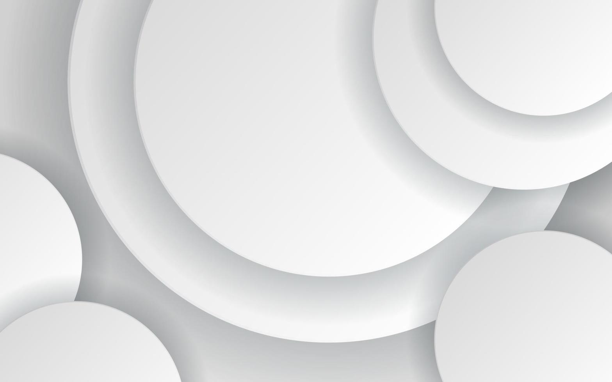

‹ Back

Retirement Website
UX Design
2016
As a Designer I did...
- Collaborative Discovery: Led functional workshops with subject matter experts to map out the complexities of pension management.
- Competitive Analysis: Performed deep-dive benchmarking of similar institutional sites to inform the new digital strategy.
- Structural Redesign: Rearchitected the Member Space (Espace Adhérent) navigation to prioritize essential services and reduce cognitive load for users.
- Multi-Device Execution: Delivered high-fidelity Responsive Web Design (RWD) mockups, focusing on accessibility and visual clarity across all screen sizes.